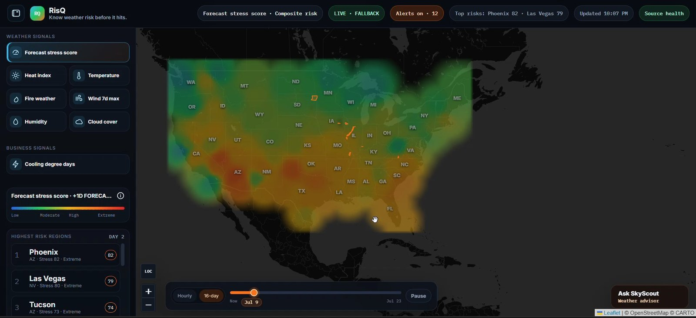

Product | Analytics | Decision UX
RisQ Weather Intelligence
Role: Product builder. Created a live U.S. weather-risk product combining forecast stress, NOAA/NWS alerts, ranked regions, comparisons, and SkyScout. The interface distinguishes unavailable evidence from confident signals instead of filling gaps with unsupported claims.
Artifact: Public product, live workflow, and source repository.